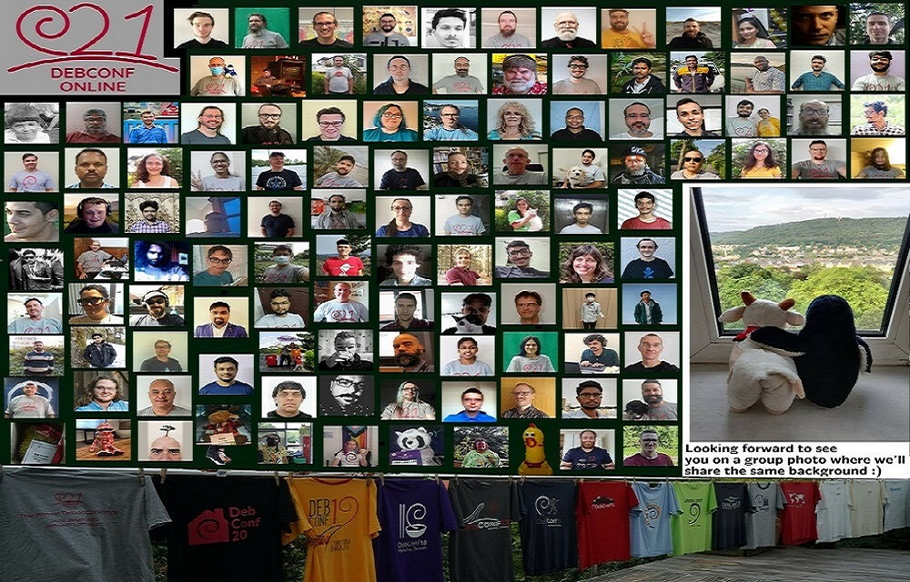

Publié le Jeudi 09 Septembre 2021
Écrit par Laura Arjona Reina et Donald Norwood
Traduit par Jean-Pierre Giraud
Artwork par Judit Fogiszinger

Samedi 28 août 2021, la conférence annuelle des développeurs et contributeurs Debian s'est achevée.
DebConf21 s'est tenue en ligne pour la deuxième fois du fait de la pandémie du coronavirus (COVID-19).
Toutes les sessions ont été diffusées en direct à travers différents canaux pour participer à la conférence : messagerie IRC, édition de texte collaboratif en ligne et salons de visioconférence.
Avec plus de 740 participants de plus de 15 pays différents et un total de plus de 70 présentations, sessions d'échange ou de discussion informelle (BoF) et d'autres activités, DebConf21 a été un énorme succès.
La configuration élaborée pour de précédents événements en ligne, intégrant Jitsi, OBS, Voctomix, SReview, nginx, Etherpad et un frontal récemment écrit basé sur le web pour Voctomix a été améliorée et utilisée avec succès pour DebConf21. Toutes les composantes de l'infrastructure vidéo sont des logiciels libres et l'ensemble des réglages est configuré au moyen du dépôt public ansible de l'équipe Vidéo.
Le programme de DebConf21 comprenait une grande diversité d'événements regroupés en plusieurs fils :
- introduction au logiciel libre et Debian ;
- empaquetage, politique et infrastructure Debian ;
- administration système, automatisation et orchestration ;
- nuage et conteneurs ;
- sécurité ;
- communauté, diversité, valorisation locale et contexte social ;
- internationalisation, régionalisation et accessibilité ;
- embarqué et noyau ;
- mélanges Debian et distributions dérivées de Debian ;
- Debian dans les sciences humaines et les sciences
- et d'autres choses encore.
Les communications ont été diffusées sur deux canaux et plusieurs de ces activités se sont tenues en différentes langues : télougou, portugais, malayalam, kannada, hindi, marathi et anglais, permettant à un public plus varié d'apprécier leur participation.
Entre les communications, l'équipe Vidéo a diffusé en boucle les logos des parrains habituels, mais aussi des clips vidéo supplémentaires comprenant des photos des DebConf précédentes, des anecdotes amusantes sur Debian et de petites dédicaces vidéo envoyées par des participants pour communiquer avec leurs amis de Debian.
L'équipe Publicité de Debian a réalisé son habituelle « couverture en direct » pour encourager la participation avec des « micronews » annonçant les différents événements. L'équipe DebConf a aussi fourni plusieurs options pour suivre le programme sur son téléphone mobile.
Pour tous ceux qui n'ont pu participer à la DebConf, la plupart des communications et des sessions sont déjà disponibles sur le site web des réunions Debian, et les dernières le seront dans les prochains jours.
Le site web de DebConf21 restera actif à fin d'archive et continuera à offrir des liens vers les présentations et vidéos des communications et des événements.
L'an prochain, il est prévu que DebConf22 se tienne à Prizren, Kosovo, en juillet 2022.
DebConf s'est engagée à offrir un environnement sûr et accueillant pour tous les participants. Durant la conférence, plusieurs équipes (le secrétariat, l'équipe d'accueil et l'équipe communauté) étaient disponibles pour offrir aux participants le meilleur accueil à la conférence et trouver des solutions à tout problème qui aurait pu subvenir. Voir la page web à propos du Code de conduite sur le site de DebConf21 pour plus de détails à ce sujet.
Debian remercie les nombreux parrains pour leur engagement dans leur soutien à DebConf21, et en particulier ses parrains de platine : Lenovo, Infomaniak, Roche, Amazon Web Services (AWS) et Google.
À propos de Debian
Le projet Debian a été fondé en 1993 par Ian Murdock pour être un projet communautaire réellement libre. Depuis cette date, le projet Debian est devenu l'un des plus importants et des plus influents projets à code source ouvert. Des milliers de volontaires du monde entier travaillent ensemble pour créer et maintenir les logiciels Debian. Traduite en soixante-dix langues et prenant en charge un grand nombre de types d'ordinateurs, la distribution Debian est conçue pour être le système d'exploitation universel.
À propos de DebConf
DebConf est la conférence des développeurs du projet Debian. En plus d'un programme complet de présentations techniques, sociales ou organisationnelles, DebConf fournit aux développeurs, aux contributeurs et à toute personne intéressée, une occasion de rencontre et de travail collaboratif interactif. DebConf a eu lieu depuis 2000 en des endroits du monde aussi variés que l'Écosse, l'Argentine ou la Bosnie-Herzégovine. Plus d'information sur DebConf est disponible à l'adresse https://debconf.org/.
À propos de Lenovo
En tant que leader mondial en technologie, produisant une vaste gamme de produits connectés, comprenant des smartphones, des tablettes, des machines de bureau et des stations de travail aussi bien que des périphériques de réalité augmentée et de réalité virtuelle, des solutions pour la domotique ou le bureau connecté et les centres de données, Lenovo a compris combien étaient essentiels les plateformes et systèmes ouverts pour un monde connecté.
À propos d'Infomaniak
Infomaniak est la plus grande compagnie suisse d'hébergement web qui offre aussi des services de sauvegarde et de stockage, des solutions pour les organisateurs d'événement et des services de diffusion en direct et de vidéo à la demande. Elle possède l'intégralité de ses centres de données et de tous les éléments essentiels pour le fonctionnement des services et produits qu'elle fournit (à la fois sur le plan matériel et logiciel).
À propos de Roche
Roche est un fournisseur pharmaceutique international majeur et une entreprise de recherche dédiée à la médecine personnalisée. Plus de 100 000 employés à travers le monde travaillent à résoudre certains des plus grands défis de l'humanité au moyen de la science et de la technologie. Roche est fortement impliqué dans des projets de recherche collaboratifs à financement public avec d'autres partenaires industriels et universitaires et soutient la DebConf depuis 2017.
À propos d'Amazon Web Services (AWS)
Amazon Web Services (AWS) est une des plateformes de nuage les plus complètes et largement adoptées au monde, proposant plus de 175 services complets issus de centres de données du monde entier (dans 77 zones de disponibilité dans 24 régions géographiques). Parmi les clients d'AWS sont présentes des jeunes pousses à croissance rapide, de grandes entreprises et des organisations majeures du secteur public.
À propos de Google
Google est l'une des plus grandes entreprises technologiques du monde qui fournit une large gamme de services relatifs à Internet et de produits tels que des technologies de publicité en ligne, des outils de recherche, de l'informatique dans les nuages, des logiciels et du matériel.
Google apporte son soutien à Debian en parrainant la DebConf depuis plus de dix ans, et est également un partenaire de Debian en parrainant les composants de l'infrastructure d'intégration continue de Salsa au sein de la plateforme Google Cloud.
Plus d'informations
Pour plus d'informations, veuillez consulter la page internet de DebConf21 à l'adresse https://debconf21.debconf.org/ ou envoyez un message à press@debian.org.